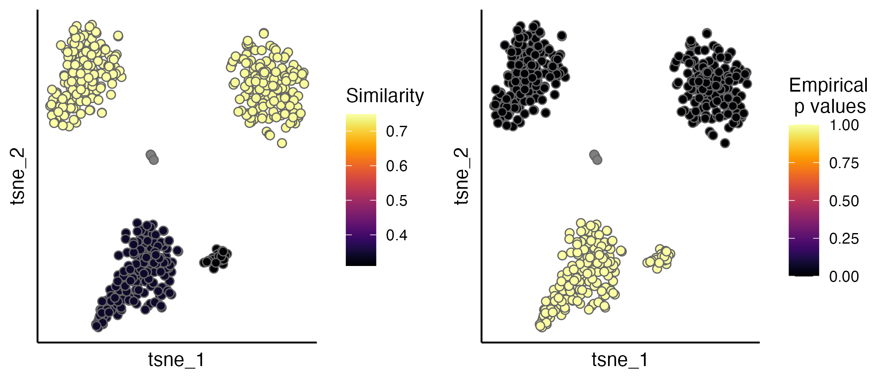

Clustering Single-cell RNA-Seq (scRNA-Seq) data from multiple samples or conditions are often challenged by confounding factors, such as batch effects and biologically relevant variability. Existing batch effect removal methods typically require strong assumptions on the composition of cell populations being near identical across samples. Here we present CIDER, a meta-clustering workflow based on inter-group similarity measures. The prototype of this method is firstly applied in Hu et al., Cancer Cell 2020.
=======Clustering Single-cell RNA-Seq (scRNA-Seq) data from multiple samples or conditions are often challenged by confounding factors, such as batch effects and biologically relevant variability. Existing batch effect removal methods typically require strong assumptions on the composition of cell populations being near identical across samples. Here we present CIDER, a meta-clustering workflow based on inter-group similarity measures. The prototype of this method is firstly applied in Hu et al., Cancer Cell 2020.
For more informtion please see our publication on Genome Biology (2021).
>>>>>>> Stashed changesCIDER can:
- address the clustering task for confounded scRNA-Seq data, or
- assess the biological correctness of integration as a test metric, while it does not require the existence of prior cellular annotations.
For more informtion please see our preprint.
Installation
You can install CIDER from github with:
# install.packages("devtools")
devtools::install_github('zhiyhu/CIDER')Installation
You can install CIDER from CRAN with:
install.packages("CIDER")CIDER as an evaluation metric - Quick start
If you have scRNA-Seq data corrected by an integration algorithm (e.g. Seurat-CCA, Harmony, Scanrama…). You can use CIDER to evaluate if the biological populations are correctly aligned.
Before running CIDER evaluation functions, make sure that you have a Seurat object (e.g. seu.integrated) with corrected PCs in seu.integrated@reductions$pca@cell.embeddings. Seurat-CCA automatically put the corrected PCs there. If other methods are used, the corrected PCs can be added using seu.integrated@reductions$pca@cell.embeddings <- corrected.PCs.
library(CIDER)
seu.integrated <- hdbscan.seurat(seu.integrated)
ider <- getIDEr(seu.integrated, verbose = FALSE)
seu.integrated <- estimateProb(seu.integrated, ider)The evaluation scores (IDER-based similarity and empirical p values) can be visualised by the scatterPlot function. A detailed tutorial of evaluation is available.
p1 <- scatterPlot(seu.integrated, "tsne", colour.by = "similarity")
p2 <- scatterPlot(seu.integrated, "tsne", colour.by = "pvalue")
plot_grid(p1,p2, ncol = 3)
Use CIDER for clustering tasks
Quick start - asCIDER
Here seu is a Seurat object with initial clustering annotation stored in initial_cluster of metadata and batch information in Batch. The asCIDER example here contains two steps: computing IDER-based similarity matrix (getIDER) and performing the final clustering (finalClustering).
ider <- getIDEr(seu,
group.by.var = "initial_cluster",
batch.by.var = "Batch")
seu <- finalClustering(seu, ider, cutree.h = 0.45)A detailed tutorial of asCIDER is here. If your data do not have prior batch-specific clusters, the dnCDIER tutorials (high-level and detailed walk-through) can be referred to.
Citation
Z. Hu, A. A. Ahmed, C. Yau. An interpretable meta-clustering framework for single-cell RNA-Seq data integration and evaluation. bioRxiv 2021.03.29.437525; doi: https://doi.org/10.1101/2021.03.29.437525
Z. Hu, M. Artibani, A. Alsaadi, N. Wietek, M. Morotti, T. Shi, Z. Zhong, L. Santana Gonzalez, S. El-Sahhar, M. KaramiNejadRanjbar, G. Mallett, Y. Feng, K. Masuda, Y. Zheng, K. Chong, S. Damato, S. Dhar, L. Campo, R. Garruto Campanile, V. Rai, D. Maldonado-Perez, S. Jones, V. Cerundolo, T. Sauka-Spengler, C. Yau, A. A. Ahmed. The repertoire of serous ovarian cancer non-genetic heterogeneity revealed by single-cell sequencing of normal fallopian tube epithelial cells. Cancer Cell 37 (2), p226-242.E7 (2020). doi: https://doi.org/10.1101/2021.03.29.437525
=======A detailed tutorial of asCIDER is here. If your data do not have prior batch-specific clusters, the dnCDIER tutorials (high-level and detailed walk-through) can be referred to.
Quick start - compute the similarity matrix within one batch
Here is the code used to compute the similarity matrix within one batch.
library(CIDER)
# make sure have a colume called "Batch" in the data and assign a uniform value
# to all cells, for example:
seu$Batch <- "onebatch"
# run the getDistMat, the input needs to be list(seu), the tmp.initial.clusters
# is the group information that you want to compute the similarity matrix with.
# The output is the similarity matrix.
dist <- getDistMat(seu_list = list(seu), tmp.initial.clusters = "cell_type")A more dedicated function is under construction.
Bug reports and issues
Please use Issues to report bugs or seek help. Thank you!
Citation
Z. Hu, A. A. Ahmed, C. Yau. CIDER: an interpretable meta-clustering framework for single-cell RNA-seq data integration and evaluation. Genome Biology 22, Article number: 337 (2021); doi: https://doi.org/10.1186/s13059-021-02561-2
>>>>>>> Stashed changes